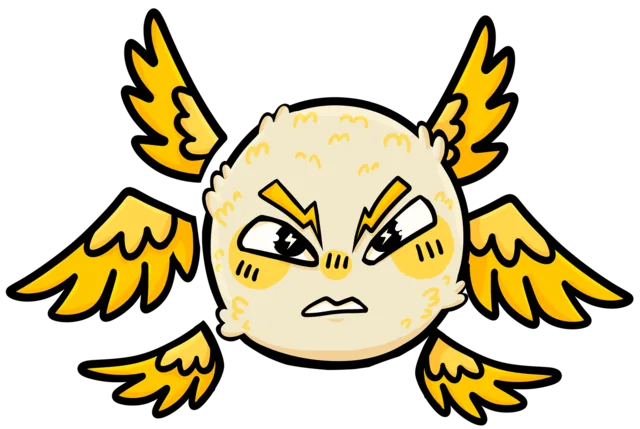
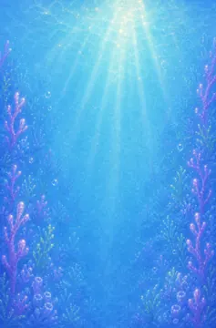

Ball is God?! Minorani aylantiring. Zarbaga aylaning.
Qattiq vertikal tushish arkadasi, u erda gorizontal sudrash qulab tushayotgan Espa atrofida minorani aylantiradi. Xavfsiz qo'nishlarni o'tkazib yuboring, kombo zarbasini zaryadlang va bitta himoyasiz zarba yugurishni tugatadigan afsonaviy dunyoni bosib o'ting.
Faol ishlab chiqarish: o'nta lokatsiya, bosslar, tarmoqlanuvchi dialoglar va o'yin qoidalarini o'zgartiradigan karma yo'llari.
Aylantirishminorani Espa atrofida torting
Xavfuchta xavfsiz qo'nishni o'tkazib yuboring
Zarbaplatformani yorib o'ting
Joriy yig'ilma ichida
Karma dialogdan ko'ra ko'proq o'zgaradi.
Yorug', neytral va qorong'u karma yo'llari qalqonlarning o'zini tutishini, ogohlantirish signallarini, dushmanlarning tajovuzkorligini va boss bosqichlarini o'zgartiradi, shuning uchun syujet o'ynash usulingizga ta'sir qiladi.
Yig'ilma holati Faol ishlab chiqarishBarcha o'nta dialog dunyosi
Barcha o'nta dunyo uchun dialog fonlari, Ena'dan Deka'gacha tushish tartibida.


Joriy ishlab chiqarish interfeysi
Joriy yig'ilmadagi daraja tanlash, dialog va natija ekranlari.
Bu siz uchratadigan joriy tartib: daraja tanlash, dialog, bosqich tanlovi, keyin g'alaba yoki alohida mag'lubiyat ekrani. Quyidagi barcha tasvirlar ishlab chiqarish Unity loyihasining san'atidan foydalanadi.
Osmon marshruti 100-darajali o'nta bobda yaratilgan darajalarni tanlaydi.
Ishlab chiqarish menyusi 100-darajali boblarda o'nta joyni xaritaga kiritadi va to'g'ridan-to'g'ri tanlangan yugurishga ochiladi.

 201
201Dialog joyning ichida bo'lib o'tadi.
Qahramon portreti, lokatsiya san'ati va so'zlovchi lavhasi bitta vertikal ramkada jamlangan.


Shash
Davom eting, lekin bu oson bo'ladi deb o'ylamang. Trials sizni kutmoqda, bu esa oldingi hamma narsani shunchaki arzimas narsadek ko'rsatib beradi.
04 / Tanlov bosqichi
Javob tushishning bir qismiga aylanadi.
Mahalliy 90 va 100-darajalarda maxsus panel dialog yugurishni hal qilishdan oldin omon qoldirish yoki o'ldirish qarorini so'raydi.

Omon qoldirish
O'ldirish
05 / Natija menyulari
G'alaba davom ettiradi. Mag'lubiyat xuddi shu sinovga qaytaradi.
Joriy versiyada ikkita alohida natija holati mavjud: PanelWin takrorlash va keyingi darajani taklif qiladi, PanelOver esa bitta aniq takrorlash harakatini saqlaydi.
G'alaba · PanelWin
Tushish yakunlandi
 Takrorlash
Keyingi
Takrorlash
Keyingi
Takrorlash
Keyingi
Dialog qahramonlari
Tushib ketayotganda yuzlar uchrashdi.
Toʻgʻri ishlab chiqarilgan ochiq va yopiq portret juftliklari boʻlgan barcha 25 ta belgi quyida keltirilgan. Ifodani almashtirish uchun kursorni suring yoki kartani fokuslang.





Oʻyin haqida umumiy maʼlumot
Ball is God?! - aylanuvchi minora orqali tushish haqidagi hardkor arkada o'yini.
G'oya
Espa'ni ilohiy minora bo'ylab pastga yo'naltiring. Bitta xato o'yinni tugatishi mumkin, asosiy qarorlaringiz esa dunyoning o'yin qoidalarini o'zgartiradi.
Joriy yig'ilma
O'nta joylashuv sahnasi, protsessual minora yaratish, kombo zarba, svayp qalqoni, boss konfiguratsiyasi, tarmoqli dialog, ishlab chiqarish menyulari va ifodaga tayyor portretlar amalga oshiriladi.
Tomoshabinlar
Qiyin mobil arkadalar, xavf va mukofotga asoslangan taymingni va bosslarni, kuzatishga arziydigan syujetni yoqtiradigan o'yinchilar.
Holat
Faol ishlab chiqarish. So'nggi ishlar o'yin tizimlari, dunyo grafikasi, sinovdan o'tkazish va o'yinning telefonda qanday o'ynalishini qamrab oladi.
Xususiyatlar
Ball is God?! o'yinida nima qilasiz?
Sudrab buriladigan tushish
Gorizontal tortish minorani avtomatik ravishda tushadigan Espa atrofida aylantirib, bo'shliqlar, xavf-xatarlar va xavfsiz platformalarni o'rnatadi.
Hardkor arkada bosimi
Bitta himoyalanmagan zarba o'yinni tugatadi, shuning uchun minorani o'qish va har bir harakatni aniq hisoblash kerak.
Bosslar va afsonaviy olamlar
Har birining o'z bosslari bor o'nta lokatsiya voqeani bir dunyodan ikkinchisiga olib boradi.
Qoidalarni o'zgartiradigan tanlovlar
Rahm-shafqat, kuch va karma dialogni, qalqon qoidalarini, dushman tajovuzkorligini, ogohlantirishlarni va boss fazalarini o'zgartiradi.
Oʻyin sikli
Ball is God?! o'yinini qanday o'ynash
- 01-qadamTushishni o'qing
Keyingi platformalar, tirqishlar va xavflarga ko'z tashlang va tushayotganda xavfsiz vaqt oynalarini qidiring.
- 02-qadamMinorani aylantiring
Gorizontal tortish dunyoni Espa atrofida aylantirib, xavfsiz platformani yoki ataylab bo'shliqni tekislaydi.
- 03-qadamXavf va zarba
Kombo zarbani zaryadlash uchun uchta platformani o'tkazib yuboring, so'ngra qalqon bitta halokatli xatoni qoplagan vaqtda tuzilmalarni yorib o'ting.
- 04-qadamNatijani tanlang
Rahm-shafqat va kuch karma, dialog va dushmanlar hamda bosslarga o'tkaziladigan o'yin qoidalarini shakllantiradi.
Hikoya / dunyo
Tanlovlaringiz siz bilan birga pastga tushadigan afsonaviy minora.
Ball is God?! bolalikdan vertikal pastga tushadigan mobil arkadalarga bo'lgan qiziqishdan boshlangan: bo'shliqlarni o'qish, tez reaksiyaga kirishish va instinkt orqali omon qolish.
Format ko'proq narsani ko'tara olardi: bosslar, xarakterli qahramonlar, syujet va axloqiy taranglik. Joriy loyiha Espa'ni o'nta lokatsiya va g'alati qahramonlar guruhi orqali olib boradi, tanlovlar esa hikoyani ham, o'yinni ham o'zgartiradi.
Shunday qilib maqsad boss jangi bosimi va syujetli RPG oqibatlari bor oddiy vertikal tushish arkadasiga aylandi.
- Konsepsiya
- Afsonaviy syujetli aylanuvchi minora arkadasi
- Dunyolarning joriy koʻlami
- O'nta lokatsiya va boss konfiguratsiyalari
- Hikoya bosqichi
- Toʻliq batafsil syujet qoralamasi
- Ishlab chiqarish holati
- Faol ishlab chiqarish
Qisqacha
Oddiy surish boshqaruvi va qoidalarni o'zgartiradigan syujet.
Surib aylantirish boshqaruvi darhol javob beradi. Qolganini afsonaviy dunyolar, bosslar va o'yinni o'zgartiradigan tanlovlar beradi.
Joriy yig'ilmada deterministik minora generatsiyasi, xavf va mukofotga asoslangan zarbalar, bir zarbada mag'lubiyat, bosslar, tarmoqlanuvchi dialoglar va o'yinni o'zgartiradigan karma allaqachon bor.
- Janr
- Hikoyaga asoslangan vertikal tushuvchi arkada
- Maqsadli platforma
- iOS / Android
- Sessiya formati
- Mahoratga asoslangan tez urinishlar
- Studiya
- WillowinWorlds
Materiallarni yuklab oling
Ball is God?! matbuot va ijodkor materiallari
Matbuotda yoritish, nashriyotchilar ko'rib chiqishi va do'kon sahifasi havolalari uchun WebP oldindan ko'rish fayllari. To'liq o'lchamdagi manba fayllar so'rov bo'yicha mavjud.
Brend va qahramonlar
Oʻyin belgisi va toʻliq ishlab chiqarish dialogi portretlariga ega boʻlgan barcha 25 ta joriy belgilar. Ismlar Unity mahalliylashtirish kalitlariga mos keladi.
EspaOʻyinchi qahramoni portreti.
RevlaJoriy yig'ilmadagi dialog portreti.
ShashJoriy yig'ilmadagi dialog portreti.
ShushJoriy yig'ilmadagi dialog portreti.
ShishJoriy yig'ilmadagi dialog portreti.
GigoJoriy yig'ilmadagi dialog portreti.
GogaJoriy yig'ilmadagi dialog portreti.
GigaJoriy yig'ilmadagi dialog portreti.
AskoldJoriy yig'ilmadagi dialog portreti.
MirasJoriy yig'ilmadagi dialog portreti.
HihJoriy yig'ilmadagi dialog portreti.
HehJoriy yig'ilmadagi dialog portreti.
HahJoriy yig'ilmadagi dialog portreti.
MusyaJoriy yig'ilmadagi dialog portreti.
DusyaJoriy yig'ilmadagi dialog portreti.
SusyaJoriy yig'ilmadagi dialog portreti.
VladusJoriy yig'ilmadagi dialog portreti.
FrishaJoriy yig'ilmadagi dialog portreti.
LurenJoriy yig'ilmadagi dialog portreti.
KurenJoriy yig'ilmadagi dialog portreti.
Don YagonJoriy yig'ilmadagi dialog portreti.
LuryaJoriy yig'ilmadagi dialog portreti.
KhleyaJoriy yig'ilmadagi dialog portreti.
VaronJoriy yig'ilmadagi dialog portreti.
WhiteJoriy yig'ilmadagi dialog portreti.
Menyu fonlari
Osmon darajasini tanlash tizimi tomonidan qo'llaniladigan joriy ishlab chiqarish san'ati.
 Osmon menyusi
Osmon menyusi
Vertikal tushuvchi dunyolar
Ena dan Deka gacha buyurtma qilingan o‘nta joriy joylashuv fonining to‘liq to‘plami.
 01 · Osmon dunyosiEna vertikal tushish foni.
01 · Osmon dunyosiEna vertikal tushish foni.
 02 · Kosmik dunyoDyo vertikal tushish foni.
02 · Kosmik dunyoDyo vertikal tushish foni.
 03 · Bo'ronli dunyoTria vertikal tushish foni.
03 · Bo'ronli dunyoTria vertikal tushish foni.
 04 · Qor dunyosiTessera vertikal tushish foni.
04 · Qor dunyosiTessera vertikal tushish foni.
 05 · Vulkan dunyosiPente foni; o'yinda jonlantirilgan.
05 · Vulkan dunyosiPente foni; o'yinda jonlantirilgan.


06 · Okean dunyosiEksi vertikal tushish foni. 07 · Cho'l dunyosiEpta vertikal tushish foni.
07 · Cho'l dunyosiEpta vertikal tushish foni.
 08 · O'rmon dunyosiOhto vertikal tushish foni.
08 · O'rmon dunyosiOhto vertikal tushish foni.
 09 · Gʻor dunyosiEnnea vertikal tushish foni.
09 · Gʻor dunyosiEnnea vertikal tushish foni.
 10 · Jahannam dunyosiDeka vertikal tushish foni.
10 · Jahannam dunyosiDeka vertikal tushish foni.
Syujetli arkada fonlari
Toʻliq dialog-joylashuv toʻplami: Nur zali va barcha oʻn dunyo uchun fon.
 00 · Nur zaliBoshlang'ich dialog foni.
00 · Nur zaliBoshlang'ich dialog foni.
 01 · Osmon suhbatiEna hikoya foni.
01 · Osmon suhbatiEna hikoya foni.
 02 · Kosmik dialogDyo hikoya foni.
02 · Kosmik dialogDyo hikoya foni.
 03 · Bo'ron suhbatiTria hikoya foni.
03 · Bo'ron suhbatiTria hikoya foni.
 04 · Qor suhbatiTessera hikoya foni.
04 · Qor suhbatiTessera hikoya foni.
 05 · Vulqon suhbatiPente hikoya foni.
05 · Vulqon suhbatiPente hikoya foni.
 06 · Okean suhbatiEksi hikoya foni.
06 · Okean suhbatiEksi hikoya foni.
 07 · Cho'l suhbatiEpta hikoya foni.
07 · Cho'l suhbatiEpta hikoya foni.
 08 · O'rmon suhbatiOhto hikoya foni.
08 · O'rmon suhbatiOhto hikoya foni.
 09 · G'or suhbatiEnnea hikoya foni.
09 · G'or suhbatiEnnea hikoya foni.
 10 · Jahannam suhbatiDeka hikoya foni.
10 · Jahannam suhbatiDeka hikoya foni.
Ball is God?! FAQ
Ball is God?! haqida tez-tez beriladigan savollar
Ball is God?! qanday o'yin
Hardkor vertikal tushish arkadasi. Siz tushib borayotgan Espa atrofidagi minorani aylantirasiz, zarbalarni zaryadlash uchun xavfsiz qo'nishlarni o'tkazib yuborasiz va afsonaviy dunyolarni yorib o'tasiz.
Ball is God?! qanday o'ynaladi?
Minorani aylantirish uchun gorizontal ravishda sudrang, kombo zarbani zaryadlash uchun uchta platformani o'tkazib yuboring va sovutish qalqoni halokatli zarbani qabul qilishi kerak bo'lganda vertikal suring.
Ball is God?! chiqdimi?
Hali yo'q. U o'yin tizimlari, dunyo grafikasi, syujet kontenti va sinovdan o'tkazish bo'yicha faol ishlab chiqarishda. Ommaviy chiqarilish sanasi yo'q. Maqsadli platformalar - iOS va Android.
Ball is God?! nimasi bilan ajralib turadi?
U xavf va mukofotga asoslangan arkada tarangligini o'nta lokatsiya hamda dialoglarni, dushmanlarni, hujum ogohlantirishlarini, qalqonlarni va bosslarni o'zgartiradigan karma bilan birlashtiradi.
Ball is God?! o'yinini kim yaratadi?
WillowinWorlds - mobil boshqotirmalar va arkadalar yaratadigan mustaqil studiya.
Ball is God?! matbuot materiallaridan foydalansam bo'ladimi?
Ha, matbuot, nashriyotchilar ko'rib chiqishi va do'kon havolalari uchun. Manba fayllar so'ramaguningizcha yopiq qoladi.
Ball is God?! Devlog
Nima va qachon o'zgardi
- Dunyo yuzalari va xavfni tekshirish
Qahramonlar taqdimoti, deterministik generatsiya va tikanli xavflar umumiy vizual va tekshiruv ishidan o'tdi.
- 2026 yil iyulUI va qahramonlarni takomillashtirish
Endi daraja tanlash, umumiy harakat tugmalari, vertikal dialog ko'rinishi va juft qahramon ifodalari tayyor.
- 2026 yil fevralLoyiha ko'lamini ko'rib chiqish
Jamoa katta hikoyani integratsiyalash ishlovini yakunladi va loyihaning to'liq ko'lamini ko'rib chiqdi: o'nta dunyo, axloqiy tanlovlar, bosslar va bir nechta yakunlar.
- 2025 yil aprel-mayHikoyani qayta yozish va qobiliyatlar
Toʻliq hikoya qayta yozildi, xarakter qobiliyatlari yaxshilandi va axloqiy oqibatlar aniqroq boʻldi.
- 2024 yil avgustHikoya yo'nalishi boshlanadi
Jamoa Ball is God?! oddiy arkada tushishdan ko'proq bo'lishi kerak deb qaror qildi va afsonaviy syujet hamda axloqiy tanlov g'oyasini qo'shdi.
- 2024 yil iyulDastlabki konsepsiya
Loyiha studiyaning birinchi o'yin g'oyasi sifatida boshlangan: ilohiy minora orqali tushish haqidagi tezkor vertikal arkada o'yini.
- Joriy yig'ilmaBitta yig'ilmada arkada va syujet
Aylanuvchi minoradan tushish, kombo zarba, surish qalqoni, bosslar, dialoglar va karma endi bitta yig'ilmada birga ishlaydi.